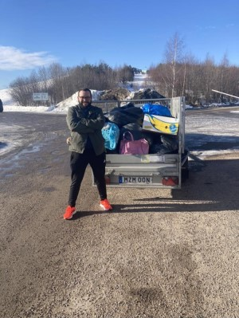

Om oss
”Häller du på mjölken före eller efter flingorna?” – det var Albins första fråga till Anna när vi hade matchat på Tinder i mars 2020.
Med sådana frågor väckte Albin Annas intresse och det tog inte lång tid innan vi träffades en kall vårdag utanför Luleås kulturhus. Dock stod vi på varsin sida av huset och det höll på att inte bli någon dejt. Tur var väl det att Annas bästa vän ändå lyckades övertyga Anna att sms:a Albin och fråga vart han höll hus.
Albin hade 4 år tidigare flyttat upp till Luleå för att plugga till civilingengör. Han är född och uppvuxen i Linköping tillsammans med sina två systrar och föräldrar.
Anna hade precis bytt ett äventyr i Riga (och 6 års läkarstudier) till ett annat i norr, nämligen i Piteå.
Tillsammans påbörjade vi vårt liv i Norrbotten. Covidpandemin som vi alla minns, tvingade oss att tidigt fatta beslutet att flytta ihop för att kunna umgås. Snabbt insåg vi att Annas 1:a på 35kvm var lite litet och vi fick byta upp oss till vår första gemensamma lägenhet i januari 2021.
På somrarna har Anna lett en aggressiv reklamkampanj för västkusten och det tog inte lång tid innan Albin började känna sig som en tvättäkta västkustfinne med elitistiska åsikter om saltvatten.
2022 blev året som vi tog steget att flytta ner till Trollhättan för att prova vingarna i en större
stad och för att komma närmare hem (Annas hem).
Det var också då vi påbörjade vår nästa dröm, Saltverket. Tomten där vi nu bygger vårt
drömhem.


På dagarna jobbar nu Albin nere i Göteborg, och innan han åker hem till Anna på kvällen blir det en och annan bolderingsvägg med kollegorna. Anna sitter sällan hemma och väntar på Albin utan jobbar ofta kväll på akuten på NÄL.
I augusti 2023 friade Albin till Anna och nu räknar vi ner dagarna till vårt bröllop!